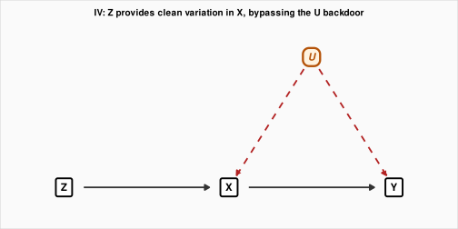
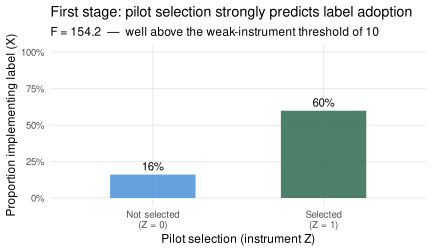
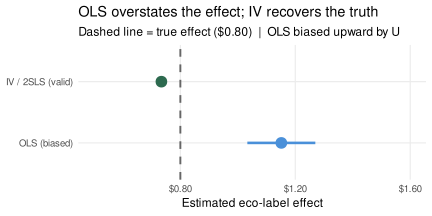
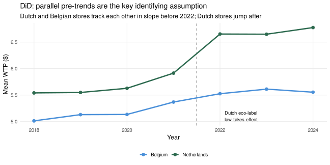
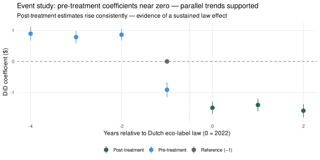
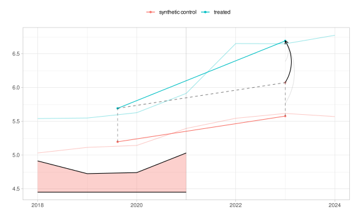
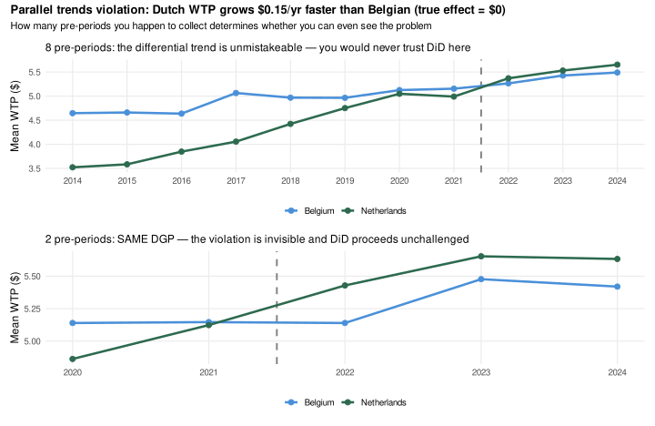
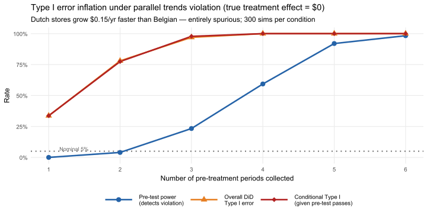
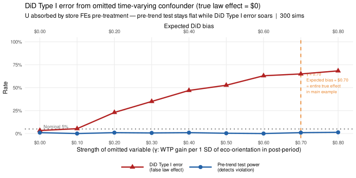

Part 3: Secondary Data Tools for Causal Identification
TipHow to use the code in this section
The code blocks throughout this section contain inline annotations explaining what data structures go in, what the key function arguments control, and what to look for in the output. Click any “▶ Code” triangle to expand a block and read the annotations alongside the code. Treat them as a guided checklist: wherever you see a comment starting with # ──, it marks a decision point you would need to revisit with your own data.
This part covers three secondary-data tools for causal identification — instrumental variables (IV), regression discontinuity design (RDD), and difference-in-differences (DiD). They are not three unrelated methods. They share a common logic: find variation in the treatment that is as good as random — variation that is unrelated to the unobserved confounders that make simple comparisons misleading. IV finds that variation through an external lever; RDD finds it at a sharp threshold; DiD finds it in a policy timing that differs across groups. Understanding IV first makes RDD and DiD easier to see as extensions of the same core idea.
Instrumental Variables
The core problem
Part 2 showed that when an unobserved variable \(U\) causes both treatment \(X\) and outcome \(Y\), no amount of regression adjustment on observed covariates can recover the causal effect of \(X\) on \(Y\). The path \(X \leftarrow U \rightarrow Y\) is a backdoor that remains open whenever \(U\) is unmeasured.
In the eco-label context: suppose stores that display eco-labels (\(X = 1\)) tend to be in neighbourhoods with higher baseline environmental orientation (\(U\)). \(U\) independently raises consumer WTP (\(Y\)). A naive comparison of WTP between labelling and non-labelling stores overstates the label’s causal effect, because part of the WTP gap is driven by neighbourhood composition, not the label.
The IV solution
An instrument \(Z\) provides a second source of variation in \(X\) — one that is unrelated to \(U\) and therefore free of confounding. Instead of using all variation in \(X\) to estimate its effect on \(Y\), IV uses only the variation in \(X\) that comes from \(Z\). Because \(Z\) is unrelated to \(U\), this slice of variation in \(X\) is clean.
For \(Z\) to be a valid instrument, three conditions must hold:
| Condition | What it requires | Testable? |
|---|---|---|
| Relevance | \(Z\) predicts \(X\) (strong first stage) | Yes — run the first-stage regression and check \(F > 10\) |
| Independence | \(Z\) is unrelated to \(U\) (and to everything else that affects \(Y\) except through \(X\)) | No — requires theory or design |
| Exclusion | \(Z\) affects \(Y\) only through \(X\), not through any direct path | No — requires theory |
Relevance is the only condition you can test directly. Independence and exclusion are assumptions — they must be argued from the design, not demonstrated from the data.
The eco-label pilot: a concrete instrument
The government randomly selects stores to participate in a subsidized eco-labelling pilot program (\(Z = 1\) if selected). Not every selected store actually installs the label — some lack the shelf space, staff time, or interest — so \(X \neq Z\). The instrument works as follows:
- Relevance: being selected for the pilot substantially raises the probability of displaying a label (first stage)
- Independence: pilot selection is random, so \(Z\) is unrelated to neighbourhood eco-orientation \(U\)
- Exclusion: being selected for the pilot affects consumer WTP only through the store actually displaying the label, not through any other route
This is precisely the ITT / LATE framework from Part 1. Pilot selection is the encouragement (\(Z\)), label display is compliance (\(X\)), and the Wald estimator gives the causal effect for compliers — stores that display the label because they were selected for the pilot, not those that would have displayed it anyway.
The Wald estimator
\[\hat{\beta}_{IV} = \frac{\widehat{\text{Cov}}(Y, Z)}{\widehat{\text{Cov}}(X, Z)} = \frac{\text{Effect of } Z \text{ on } Y}{\text{Effect of } Z \text{ on } X} = \frac{\text{ITT}}{\text{First stage}} = \text{LATE}\]
This is also called two-stage least squares (2SLS): first regress \(X\) on \(Z\) to get predicted values \(\hat{X}\); then regress \(Y\) on \(\hat{X}\). The second stage coefficient is \(\hat{\beta}_{IV}\).
Simulation
▶ Simulate IV setting: U confounds X → Y; Z is a valid instrument
set.seed(2024)
N_iv <- 600
# ── YOUR DATA: U is the unobserved confounder (not in your dataset);
# Z is your instrument (must be in your dataset); X is your endogenous treatment;
# Y is your outcome. The structural equations below define the DGP.
U <- rnorm(N_iv) # neighbourhood eco-orientation: UNOBSERVED
Z <- rbinom(N_iv, 1, 0.5) # random pilot selection: instrument
# Compliance: high-U stores adopt even without the pilot (always-takers);
# pilot selection tilts borderline stores into adoption (compliers)
X <- rbinom(N_iv, 1, plogis(-2.0 + 2.5 * Z + 1.0 * U)) # label adoption
# True causal effect of the label = $0.80; U creates confounding
Y <- 5.00 + 0.80 * X + 0.60 * U + rnorm(N_iv, 0, 0.50) # WTP
df_iv <- tibble(Y, X, Z, U_true = U)
# Compliance breakdown (visible only in simulation)
compliance <- case_when(
X == 1 & Z == 0 ~ "Always-taker",
X == 0 & Z == 1 ~ "Never-taker",
X == Z ~ "Complier",
TRUE ~ "Defier"
)
cat("Compliance breakdown:\n")Compliance breakdown:▶ Simulate IV setting: U confounds X → Y; Z is a valid instrument
print(table(compliance))compliance
Always-taker Complier Never-taker
50 434 116 ▶ Simulate IV setting: U confounds X → Y; Z is a valid instrument
cat(sprintf("\nFirst-stage compliance rate: %.1f%%\n", 100 * (mean(X[Z==1]) - mean(X[Z==0]))))
First-stage compliance rate: 43.8%▶ OLS vs. IV: OLS is biased; IV recovers the true effect
# ── YOUR DATA: replace Y ~ X with your outcome ~ treatment; replace | Z with
# | your_instrument. The pipe syntax means "instrument for X using Z".
# Add covariates on both sides of | to control for observed confounders
# (e.g., Y ~ X + age + income | Z + age + income).
# OLS: biased — uses all variation in X, including the U-driven part
ols_iv <- lm_robust(Y ~ X, data = df_iv)
# IV (2SLS): uses only the Z-driven variation in X
iv_est <- iv_robust(Y ~ X | Z, data = df_iv)
# ── CHECK: first-stage F-statistic should exceed 10 (rule of thumb for strong
# instruments). Weak instruments (F < 10) produce severely biased IV estimates
# and wide confidence intervals.
fs_model <- lm_robust(X ~ Z, data = df_iv)
fs_F <- summary(lm(X ~ Z, data = df_iv))$fstatistic[1]
tibble(
Method = c("OLS (biased — ignores U)", "IV / 2SLS (valid — uses Z only)"),
Estimate = round(c(coef(ols_iv)["X"], coef(iv_est)["X"]), 3),
SE = round(c(ols_iv$std.error["X"], iv_est$std.error["X"]), 3),
`95% CI` = sprintf("[%.3f, %.3f]",
c(ols_iv$conf.low["X"], iv_est$conf.low["X"]),
c(ols_iv$conf.high["X"], iv_est$conf.high["X"])),
`True effect` = 0.80
) |> knitr::kable(caption = sprintf(
"OLS vs. IV: true eco-label effect = $0.80 | first-stage F = %.1f | N = %d", fs_F, N_iv))| Method | Estimate | SE | 95% CI | True effect |
|---|---|---|---|---|
| OLS (biased — ignores U) | 1.151 | 0.060 | [1.033, 1.270] | 0.8 |
| IV / 2SLS (valid — uses Z only) | 0.734 | 0.138 | [0.462, 1.006] | 0.8 |
▶ First stage: does Z predict X?
df_iv |>
group_by(Z) |>
summarise(P_X = mean(X), .groups="drop") |>
ggplot(aes(x = factor(Z, labels=c("Not selected\n(Z = 0)", "Selected\n(Z = 1)")),
y = P_X, fill = factor(Z))) +
geom_col(width = 0.5, alpha = 0.85) +
geom_text(aes(label = sprintf("%.0f%%", 100 * P_X)), vjust = -0.4, size = 4) +
scale_fill_manual(values = c("0" = clr_ctrl, "1" = clr_eco), guide = "none") +
scale_y_continuous(labels = scales::percent_format(), limits = c(0, 1)) +
labs(x = "Pilot selection (instrument Z)", y = "Proportion implementing label (X)",
title = "First stage: pilot selection strongly predicts label adoption",
subtitle = sprintf("F = %.1f — well above the weak-instrument threshold of 10", fs_F)) +
theme_mod3()
▶ OLS vs. IV coefficient comparison
tibble(
Method = factor(c("OLS (biased)", "IV / 2SLS (valid)"),
levels = c("OLS (biased)", "IV / 2SLS (valid)")),
Estimate = c(coef(ols_iv)["X"], coef(iv_est)["X"]),
lo = c(ols_iv$conf.low["X"], iv_est$conf.low["X"]),
hi = c(ols_iv$conf.high["X"], iv_est$conf.high["X"])
) |>
ggplot(aes(y = Method, x = Estimate, xmin = lo, xmax = hi, colour = Method)) +
geom_vline(xintercept = 0.80, linetype = "dashed", colour = "grey40", linewidth = 0.9) +
geom_pointrange(size = 1, linewidth = 1.2) +
scale_colour_manual(values = c("OLS (biased)" = clr_ctrl, "IV / 2SLS (valid)" = clr_eco),
guide = "none") +
scale_x_continuous(limits = c(0.5, 1.6),
labels = function(x) sprintf("$%.2f", x)) +
labs(y = NULL, x = "Estimated eco-label effect",
title = "OLS overstates the effect; IV recovers the truth",
subtitle = "Dashed line = true effect ($0.80) | OLS biased upward by U") +
theme_mod3()
NoteWhat IV identifies — and what it does not
The IV estimate is the LATE: the causal effect of the eco-label for complier stores — those that installed the label because they were selected for the pilot, not those that would have installed it regardless. Always-takers (high-U stores that adopt with or without the pilot) and never-takers (stores that never adopt) do not contribute to the IV estimate.
This is identical to the LATE from Part 1 of this module. The instrument is a different mechanism — a government lottery rather than a laboratory randomisation — but the estimand is the same: the average effect for units whose treatment status was actually changed by the instrument.
Practical limits of IV:
- Weak instruments (\(F < 10\)) produce severely biased estimates that can be worse than OLS
- Instrument validity is untestable in full — independence and exclusion rest on argument, not data
- LATE may not generalise — compliers near the instrument may differ systematically from the full population of treated units
From IV to Regression Discontinuity
The eco-label pilot above exploited randomness that a government deliberately created. In most secondary data settings, no one ran a lottery. But sometimes nature or policy creates an instrument-like discontinuity: a threshold that sharply determines treatment for units near it, and that is effectively random in a narrow window around the cutoff.
Regression discontinuity is local IV. The instrument is \(Z_i = \mathbf{1}[\text{audit score}_i \geq 70]\) — being above the threshold. Near the cutoff, audit scores have measurement noise, so whether a product lands at 69 or 71 is close to random. This near-randomness makes \(Z\) approximately independent of unobserved product quality \(U\) in that local window. The exclusion restriction is that the audit score crossing 70 affects WTP only through badge receipt, not through any other route. And relevance is guaranteed — the badge is awarded precisely at 70.
The RDD estimate is therefore a Wald estimator applied locally: the jump in WTP at 70 divided by the jump in badge receipt at 70. When all products comply (sharp RDD), the jump in badge receipt is exactly 1, and the estimate simplifies to the raw WTP jump — the LATE for products hovering near the threshold.
Regression Discontinuity Design
AlterEco’s retailer awards a “Certified Sustainable” badge to any coffee product scoring 70 or above on a third-party environmental audit (scored 0–100). Products at 69 miss the badge; products at 71 get it. Because the audit score has measurement noise, which side of the cutoff a product lands on is nearly random near 70. We exploit this near-randomness.
NoteWhy the jump at 70 is causal — the “as-good-as-random” intuition
Imagine two products with audit scores of 69 and 71. They have almost identical green credentials — similar supply chains, similar materials — but the auditor’s ruler is imprecise. Those two points of difference are largely measurement noise. Yet one gets the badge and the other doesn’t. Near the cutoff, badge assignment is as good as a coin flip.
This local near-randomness is what makes the jump causal. It is equivalent to a mini natural experiment: products just above and just below 70 are exchangeable in every way except for badge receipt. The jump in WTP at that threshold is therefore attributable entirely to the badge.
The cost of this elegance: the estimate is a local average treatment effect (LATE). It tells you the causal effect of receiving the badge for brands hovering around a 70-point score — not for the top-scoring 90s or the low-scoring 40s, which may respond to the badge very differently. This LATE is conceptually identical to the LATE from Part 1 of this module and from the IV section above — all three arise because the causal estimate is anchored to a specific sub-population (compliers near the threshold, or near the instrument) rather than the full population.
A Module 2 connection: The “as-good-as-random near the cutoff” logic is local randomisation — a naturally occurring version of the randomised experiment studied in Module 2. The same assumption that makes experiments valid (exchangeability of treated and control) holds here, but only locally. In Module 2, randomisation made exchangeability a design guarantee; here, it is an empirical claim that must be verified through the diagnostics below.
A Module 1 connection: The running variable itself is a measurement. If audit scores are measured with substantial error — auditors apply different standards, or scores reflect lobbying as much as sustainability — then the near-threshold units may not be as similar as assumed. Measurement error in the running variable biases the RDD estimate toward zero (attenuation at the boundary) and inflates the apparent smoothness of pre-cutoff trends. This is the causal-inference analogue of the reliability problem in Module 1: a noisy ruler undermines the precision of every inference drawn from it.
A practical check to run first: If brands can game the audit score to land just above 70, the “as-good-as-random” assumption breaks down. The density test below checks for suspicious bunching right at the cutoff.
Simulating an RDD
▶ Simulate 1,200 products near the 70-point certification threshold
set.seed(2024)
N_rdd <- 1200; cutoff <- 70; true_jump <- 0.80
# ── YOUR DATA: replace audit_score with your running variable (the continuous
# score that determines treatment assignment), cutoff with the actual policy
# threshold, and WTP_rdd with your outcome variable.
# df_rdd must contain: the running variable, a 0/1 treatment indicator
# (= 1 if running variable >= cutoff), the outcome, and running = running - cutoff.
audit_score <- runif(N_rdd, 30, 100)
treat_rdd <- as.integer(audit_score >= cutoff)
WTP_rdd <- 4.0 + 0.02*(audit_score-cutoff) - 0.0003*(audit_score-cutoff)^2 +
true_jump*treat_rdd + rnorm(N_rdd, 0, 0.60)
WTP_rdd <- pmax(1, pmin(10, WTP_rdd))
df_rdd <- tibble(audit_score, treat_rdd, WTP_rdd, running=audit_score-cutoff)
df_rdd |>
ggplot(aes(x=audit_score, y=WTP_rdd, colour=factor(treat_rdd))) +
geom_point(alpha=0.30, size=0.9) +
geom_vline(xintercept=cutoff, linewidth=1, colour="grey30") +
geom_smooth(method="lm", formula=y~poly(x,2), se=TRUE, alpha=0.2) +
scale_colour_manual(values=c("0"=clr_ctrl,"1"=clr_eco),
labels=c("Below 70 (no badge)","Above 70 (badge)")) +
annotate("text", x=71, y=9.2, label="Cutoff = 70", hjust=0, size=3.5, fontface="bold") +
annotate("segment", x=70, xend=70, y=3.85, yend=4.85, colour="firebrick",
arrow=arrow(ends="both", length=unit(.2,"cm")), linewidth=0.8) +
annotate("text", x=71, y=4.35,
label=sprintf("~$%.2f jump\n(badge effect)", true_jump),
hjust=0, size=3, colour="firebrick") +
labs(x="Audit Score (running variable)", y="Consumer WTP ($)", colour=NULL,
title="Regression Discontinuity: the jump at 70 estimates the badge's causal effect") +
theme_mod3()
Key Assumptions and How to Test Them
Assumption 1: No Manipulation
Code
# ── YOUR DATA: replace df_rdd$audit_score with your running variable column
# and c=cutoff with your policy threshold value.
dens_test <- rddensity(X=df_rdd$audit_score, c=cutoff)
summary(dens_test)
Manipulation testing using local polynomial density estimation.
Number of obs = 1200
Model = unrestricted
Kernel = triangular
BW method = estimated
VCE method = jackknife
c = 70 Left of c Right of c
Number of obs 677 523
Eff. Number of obs 256 209
Order est. (p) 2 2
Order bias (q) 3 3
BW est. (h) 13.827 12.101
Method T P > |T|
Robust 0.6254 0.5317
P-values of binomial tests (H0: p=0.5).
Window Length <c >=c P>|T|
1.276 + 1.276 28 20 0.3123
2.553 + 2.479 44 41 0.8284
3.829 + 3.682 64 57 0.5856
5.105 + 4.885 89 80 0.5384
6.382 + 6.087 118 101 0.2796
7.658 + 7.290 140 117 0.1698
8.934 + 8.493 165 138 0.1351
10.211 + 9.696 185 168 0.3945
11.487 + 10.898 213 190 0.2731
12.763 + 12.101 235 209 0.2354Code
invisible(rdplotdensity(dens_test, X=df_rdd$audit_score,
title="Density test: checking for bunching at the 70-point cutoff",
xlabel="Audit score", ylabel="Density"))
A significant p-value signals that brands are gaming audit scores to land just above 70. With our simulated uniform running variable, the density is continuous.
Assumption 2: Covariate Continuity
Code
env_rdd <- rnorm(N_rdd, 0 + 0.01*(audit_score-cutoff)/10, 1)
rdd_env <- rdrobust(y=env_rdd, x=df_rdd$audit_score, c=cutoff)
cat("Covariate balance — env. concern should NOT jump at the threshold:\n")Covariate balance — env. concern should NOT jump at the threshold:Code
summary(rdd_env)Sharp RD estimates using local polynomial regression.
Number of Obs. 1200
BW type mserd
Kernel Triangular
VCE method NN
Number of Obs. 677 523
Eff. Number of Obs. 136 120
Order est. (p) 1 1
Order bias (q) 2 2
BW est. (h) 7.411 7.411
BW bias (b) 11.566 11.566
rho (h/b) 0.641 0.641
Unique Obs. 677 523
=====================================================================
Point Robust Inference
Estimate z P>|z| [ 95% C.I. ]
---------------------------------------------------------------------
RD Effect -0.091 -0.122 0.903 [-0.604 , 0.533]
=====================================================================The covariate continuity test is the RDD’s randomisation check — conceptually identical to the balance tables you ran in Module 2 before analysing experimental data. In an experiment, balance across pre-treatment covariates is a consequence of random assignment; here it must be demonstrated empirically as evidence that the threshold is not systematically sorting units on unobserved characteristics.
Estimating the RDD Effect
Code
# ── YOUR DATA: replace y= with your outcome variable, x= with your running
# variable, and c= with your cutoff value.
# ── KEY ARGS: rdrobust() selects bandwidth automatically (MSE-optimal rule);
# you can override with h= to specify a fixed bandwidth, or kernel= to change
# from the default triangular kernel.
rdd_est <- rdrobust(y=df_rdd$WTP_rdd, x=df_rdd$audit_score, c=cutoff)
summary(rdd_est)Sharp RD estimates using local polynomial regression.
Number of Obs. 1200
BW type mserd
Kernel Triangular
VCE method NN
Number of Obs. 677 523
Eff. Number of Obs. 181 172
Order est. (p) 1 1
Order bias (q) 2 2
BW est. (h) 9.821 9.821
BW bias (b) 17.119 17.119
rho (h/b) 0.574 0.574
Unique Obs. 677 523
=====================================================================
Point Robust Inference
Estimate z P>|z| [ 95% C.I. ]
---------------------------------------------------------------------
RD Effect 1.042 6.435 0.000 [0.762 , 1.429]
=====================================================================Code
# ── CHECK: use the "Robust" CI for inference — it is bias-corrected.
rdplot(y=df_rdd$WTP_rdd, x=df_rdd$audit_score, c=cutoff,
title="RDD estimate: causal effect of sustainability badge on WTP",
x.label="Audit Score", y.label="WTP ($)")
Code
bw_results <- map_dfr(c(5,8,10,15,20,25,30), function(bw) {
est <- rdrobust(y=df_rdd$WTP_rdd, x=df_rdd$audit_score, c=cutoff, h=bw)
tibble(bandwidth=bw, estimate=est$coef["Conventional",1], se=est$se["Robust",1])
})
bw_results |>
mutate(lo=estimate-1.96*se, hi=estimate+1.96*se) |>
ggplot(aes(x=bandwidth, y=estimate, ymin=lo, ymax=hi)) +
geom_hline(yintercept=true_jump, linetype="dashed", colour="grey40", linewidth=1) +
geom_ribbon(alpha=0.15, fill=clr_eco) +
geom_line(colour=clr_eco, linewidth=1) + geom_point(colour=clr_eco, size=2.5) +
annotate("text", x=5.5, y=true_jump+0.05, label=sprintf("True = $%.2f", true_jump),
hjust=0, size=3.5) +
labs(x="Bandwidth (audit score units)", y="Estimated badge effect ($)",
title="RDD estimates stable across bandwidths h = 5 to 30",
subtitle="Instability would indicate sensitivity to bandwidth — a red flag") +
theme_mod3()
NoteThe bandwidth trade-off: bias vs. variance
The bandwidth \(h\) controls which products are included in the RDD comparison — only those with audit scores in \([70-h,\ 70+h]\). This creates a fundamental tension:
| Narrow \(h\) | Wide \(h\) |
|---|---|
| Products are very similar to each other near the cutoff ✔ | More observations → tighter CI ✔ |
| Few observations → wide CI ✖ | Products far from 70 differ systematically from each other ✖ |
rdrobust selects the bandwidth automatically using a mean-squared-error optimal rule. The bandwidth-sensitivity plot above is a sanity check: stable estimates across a wide range of \(h\) suggest the result is not an artefact of a specific choice.
Type I Error from Running Variable Manipulation
The density test and covariate continuity checks are the right diagnostics — but how much Type I error accumulates before those tests catch the problem? Here we simulate a concrete manipulation scenario and track false-positive rates as gaming becomes more common.
The mechanism. Two independent variables matter: (1) the audit score — operational compliance across energy use, waste, and supply chain — and (2) latent brand eco-reputation Z, an unobserved dimension reflecting genuine brand prestige and loyal eco-customer base. A brand can have strong reputation yet score just below 70: a complex supply chain, an unfamiliar auditor, or a borderline factory can drag the score down through measurement noise. Z does two things: it motivates gaming (high-reputation brands near the threshold believe they deserve the badge and have marketing resources to appeal, re-audit, or make cosmetic improvements) and it independently drives WTP (eco-conscious customers already follow high-reputation brands regardless of the badge). The true badge effect is zero.
▶ Monte Carlo: Type I error and density-test power vs. gaming rate (200 sims)
set.seed(2025)
N_SIM_RDD <- 200
N_RDD_MC <- 500
CUTOFF_MC <- 70
GAME_WINDOW <- 10
BW_RDD <- 10
rdd_mc_one <- function(p_game) {
mat <- replicate(N_SIM_RDD, {
Z_rep <- rnorm(N_RDD_MC, 0, 1)
audit <- pmin(100, pmax(30, rnorm(N_RDD_MC, mean = CUTOFF_MC - 3, sd = 9)))
near_below <- audit >= (CUTOFF_MC - GAME_WINDOW) & audit < CUTOFF_MC
game_mask <- near_below & (Z_rep > 0) & (runif(N_RDD_MC) < p_game)
if (any(game_mask)) {
cross_gap <- CUTOFF_MC - audit[game_mask] + 0.5
audit[game_mask] <- pmin(100, audit[game_mask] + cross_gap + runif(sum(game_mask), 0, 7))
}
WTP_mc <- pmax(1, pmin(10, 5.5 + 1.5 * Z_rep + rnorm(N_RDD_MC, 0, 0.30)))
D <- as.integer(audit >= CUTOFF_MC)
in_bw <- abs(audit - CUTOFF_MC) <= BW_RDD
rdd_p <- tryCatch({
if (sum(in_bw) < 10 || !any(D[in_bw] == 0) || !any(D[in_bw] == 1)) NA_real_
else {
df_bw <- data.frame(y=WTP_mc[in_bw], xc=audit[in_bw]-CUTOFF_MC, D=D[in_bw])
m <- lm(y ~ D * xc, data = df_bw)
2 * pt(-abs(summary(m)$coefficients["D","t value"]), df = m$df.residual)
}
}, error = function(e) NA_real_)
dens_p <- tryCatch({
rd <- rddensity(X = audit, c = CUTOFF_MC)
p <- rd$test$p_jk
if (is.null(p) || !is.finite(p)) 1.0 else as.numeric(p)[1]
}, error = function(e) 1.0)
c(rdd_p, dens_p)
})
data.frame(p_game=p_game, rdd_pval=mat[1,], dens_pval=mat[2,])
}
game_levels <- c(0, 0.10, 0.20, 0.30, 0.50, 0.70)
sim_rdd_mc <- map_dfr(game_levels, rdd_mc_one)
cat(sprintf("RDD simulation complete: %d conditions x %d sims = %d total.\n",
length(game_levels), N_SIM_RDD, nrow(sim_rdd_mc)))RDD simulation complete: 6 conditions x 200 sims = 1200 total.
| Gaming rate | RDD Type I error | Density test power |
|---|---|---|
| 0% | 6% | 5% |
| 10% | 9% | 2% |
| 20% | 12% | 6% |
| 30% | 37% | 13% |
| 50% | 70% | 24% |
| 70% | 96% | 40% |
WarningThe key pattern: RDD Type I error races toward 100% while the density test lags
As gaming becomes common, the density of audit scores just above 70 swells and the density just below depletes. The RDD treats this Z-sorted composition as a real treatment effect — Type I error climbs steeply toward 100%. The density test eventually picks up the bunching, but it has substantially less power than the spurious RDD finding itself. A researcher who checks rddensity, sees a borderline p-value, and proceeds will still produce highly confident false positives.
Why does Z go undetected? The audit score is observable; brand reputation is not. Standard covariate balance checks only test observed pre-treatment variables. If no measure of brand reputation was collected, the sorting is completely invisible — yet it inflates Type I error just as severely.
Researcher Checklist: Regression Discontinuity Design
NoteKey questions about your discontinuity
From RDD to Difference-in-Differences
RDD requires a sharp threshold in a single continuous score. When no such threshold exists — but you have panel data spanning a policy change that affected some units and not others — difference-in-differences uses time as the source of identification.
The identifying assumption shifts: instead of “units just above and below the threshold are exchangeable” (RDD), DiD assumes “treated and control units would have followed the same trend absent the treatment” (parallel trends). Both assumptions are forms of local exchangeability — in RDD it is spatial (near the cutoff); in DiD it is temporal (in the pre-treatment period). Both are empirically testable in part, and both can fail in ways that the available tests cannot detect.
Difference-in-Differences
The Dutch government introduces a mandatory eco-labelling law in 2022. Belgian supermarkets are not subject to it. We observe mean WTP in 15 Dutch stores (treated) and 20 Belgian stores (control).
Simulating Panel Data
Code
set.seed(2024)
n_dutch <- 15; n_belgian <- 20; n_stores_did <- n_dutch+n_belgian
years <- 2018:2024; T_treat <- 2022
# ── YOUR DATA: replace n_dutch / n_belgian with your counts of treated and
# control units; replace years with your time periods; replace T_treat with
# the first period when treatment took effect.
panel_did <- expand.grid(store=1:n_stores_did, year=years) |>
as_tibble() |>
mutate(
country = ifelse(store<=n_dutch,"Netherlands","Belgium"),
treated = (country=="Netherlands"),
post = (year>=T_treat),
did_indicator= treated & post,
store_fe = rnorm(n_stores_did, 0, 0.5)[store],
time_trend = 0.10*(year-2018),
country_fe = ifelse(country=="Netherlands", 0.30, 0),
treat_effect = did_indicator * 0.70,
WTP_did = 5.20 + store_fe + time_trend + country_fe + treat_effect + rnorm(n(), 0, 0.35)
)
panel_did |>
group_by(country, year) |>
summarise(mean_WTP=mean(WTP_did), .groups="drop") |>
ggplot(aes(x=year, y=mean_WTP, colour=country, group=country)) +
geom_vline(xintercept=T_treat-0.5, linetype="dashed", colour="grey50") +
geom_line(linewidth=1.2) + geom_point(size=2.5) +
annotate("text", x=T_treat+0.1, y=5.1,
label="Dutch eco-label\nlaw takes effect", hjust=0, size=3.2) +
scale_colour_manual(values=c("Netherlands"=clr_eco,"Belgium"=clr_ctrl)) +
labs(x="Year", y="Mean WTP ($)", colour=NULL,
title="DiD: parallel pre-trends are the key identifying assumption",
subtitle="Dutch and Belgian stores track each other in slope before 2022; Dutch stores jump after") +
theme_mod3()
NoteWhat “parallel trends” actually means — and why Belgium is the key
DiD hinges on one unanswerable question: what would Dutch stores have done after 2022 if the eco-label law had never passed? We can’t observe this counterfactual. The parallel trends assumption supplies the answer: Belgian stores tell us.
More precisely, the assumption states that absent treatment, the Dutch–Belgian WTP gap would have remained constant — both series drifting up or down by identical amounts each year. Under this assumption:
\[\underbrace{\Delta Y_{\text{Dutch}}}_{\text{observed}} - \underbrace{\Delta Y_{\text{Belgian}}}_{\text{counterfactual proxy}} = \delta_{\text{DiD}}\]
What makes this assumption fail? Anything that makes Dutch and Belgian stores diverge for reasons unrelated to the law — e.g., Dutch shoppers becoming greener faster, or a Dutch-only economic shock. The parallel trends violation section below shows exactly this scenario.
The parallel trends assumption and Module 2: Parallel trends is to DiD what exchangeability is to experimentation. In Module 2, you saw that even carefully randomised experiments can fail exchangeability — attrition, demand effects, and differential compliance all erode it. In DiD, parallel trends is unverifiable for the post-treatment period. Pre-treatment trend tests provide some diagnostic evidence, but just as a successful manipulation check does not prove the exclusion restriction (Module 2), clean pre-trends do not prove that post-treatment trends would have remained parallel.
A Module 1 parallel: Fixed effects eliminate time-invariant confounders — but only if the measurement of the outcome variable is consistent across time and units. If the WTP question wording, scale, or survey protocol changes between periods (a measurement artefact from Module 1), the DiD estimate conflates treatment effects with measurement change.
Two-Way Fixed Effects (TWFE)
\[Y_{it} = \alpha_i + \lambda_t + \delta \cdot D_{it} + \varepsilon_{it}\]
Code
# ── YOUR DATA: replace WTP_did with your outcome, did_indicator with the
# column you created as treated * post, and replace factor(store)/factor(year)
# with your unit and time identifiers.
did_twfe <- lm_robust(WTP_did ~ did_indicator + factor(store) + factor(year),
data=panel_did, clusters=store)
did_coef <- tidy(did_twfe) |> filter(term=="did_indicatorTRUE")
cat(sprintf(
"True DiD effect = 0.70\nEstimated DiD = %.3f (SE = %.3f, p = %.4f)\n95%% CI: [%.3f, %.3f]\n",
did_coef$estimate, did_coef$std.error, did_coef$p.value,
did_coef$conf.low, did_coef$conf.high
))True DiD effect = 0.70
Estimated DiD = 0.631 (SE = 0.088, p = 0.0000)
95% CI: [0.452, 0.811]
NoteWhat the two sets of fixed effects absorb
| Term | What it controls for | Example here |
|---|---|---|
| \(\alpha_i\) — store fixed effects | Time-invariant differences between stores | Store size, neighbourhood demographics, pre-existing customer base |
| \(\lambda_t\) — year fixed effects | Year-level shocks that hit all stores equally | Euro-area inflation, global supply chain costs, macro consumer sentiment |
| \(\delta\) — the DiD estimator | How much more the treated group changed after treatment vs. the control group | Causal effect of the Dutch eco-label law |
The critical residual \(\varepsilon_{it}\): whatever the fixed effects can’t absorb — differential trends, time-varying store-specific shocks — ends up here. This is exactly where parallel-trends violations hide.
Testing Parallel Trends: Event Study
Code
panel_did <- panel_did |>
mutate(year_rel=year-T_treat,
year_rel_fac=relevel(factor(year_rel), ref="-1"))
event_formula <- as.formula("WTP_did ~ treated:year_rel_fac + factor(store) + factor(year)")
did_event <- lm_robust(event_formula, data=panel_did, clusters=store)
event_tbl <- tidy(did_event) |>
filter(str_detect(term,"year_rel_fac")) |>
mutate(yr=as.integer(str_extract(term,"-?\\d+$")),
period=if_else(yr<0,"Pre-treatment","Post-treatment")) |>
add_row(yr=-1L, estimate=0, conf.low=0, conf.high=0, period="Reference (−1)")
event_tbl |>
ggplot(aes(x=yr, y=estimate, ymin=conf.low, ymax=conf.high, colour=period)) +
geom_hline(yintercept=0, linetype="dashed", colour="grey50") +
geom_vline(xintercept=-0.5, linetype="dotted", colour="grey60") +
geom_pointrange(size=0.7) +
scale_colour_manual(values=c("Pre-treatment"=clr_ctrl,"Post-treatment"=clr_eco,
"Reference (−1)"="grey40")) +
labs(x="Years relative to Dutch eco-label law (0 = 2022)", y="DiD coefficient ($)",
colour=NULL,
title="Event study: pre-treatment coefficients near zero — parallel trends supported",
subtitle="Post-treatment estimates rise consistently — evidence of a sustained law effect") +
theme_mod3()
Synthetic Difference-in-Differences
WarningThe synthetic counterfactual is unverifiable
Synthetic DiD — like classical synthetic controls — constructs a weighted combination of untreated units designed to reproduce the treated unit’s pre-treatment trajectory. The pre-period fit can look compelling, but there is no way to verify that the synthetic world it generates is a sufficiently representative stand-in for the real counterfactual post-treatment. Use this approach when you have a credible pool of donor units and a long pre-treatment window — and always report sensitivity analyses varying the donor pool.
Code
sdid_wide <- panel_did |>
dplyr::select(store, year, WTP_did, treated) |>
pivot_wider(names_from=year, values_from=WTP_did) |>
arrange(treated)
N0 <- sum(!sdid_wide$treated); T0 <- sum(years < T_treat)
Y_matrix <- sdid_wide |> dplyr::select(-store,-treated) |> as.matrix()
sdid_est <- synthdid_estimate(Y_matrix, N0, T0)
sc_est <- sc_estimate(Y_matrix, N0, T0)
did_est <- did_estimate(Y_matrix, N0, T0)
tibble(
Method = c("Standard DiD","Synthetic Control","Synthetic DiD"),
Estimate = round(c(as.numeric(did_est),as.numeric(sc_est),as.numeric(sdid_est)), 3),
`True effect`= 0.70,
Bias = round(c(as.numeric(did_est),as.numeric(sc_est),as.numeric(sdid_est))-0.70, 3)
) |> knitr::kable(caption="All three estimators vs. the true effect of 0.70")| Method | Estimate | True effect | Bias |
|---|---|---|---|
| Standard DiD | 0.631 | 0.7 | -0.069 |
| Synthetic Control | 0.618 | 0.7 | -0.082 |
| Synthetic DiD | 0.618 | 0.7 | -0.082 |
Code
plot(sdid_est, se.method="placebo")
When Parallel Trends Fails — and Pre-Testing Cannot Always Save You
Parallel trends are not directly testable — you never observe what Dutch stores would have done without the eco-label law. What you can test is whether pre-treatment trajectories were parallel. The event study above is exactly this test. But two practical problems cripple it in most real datasets:
- Too few pre-treatment periods. Most DiD studies in marketing and management observe units for only 2–4 years before treatment. With so few periods, the event study has very low statistical power to detect violations.
- You collect whatever data exists. Pre-treatment archives are often limited — the number of pre-periods is determined by data availability, not statistical power considerations.
The Module 2 power connection: In Module 2, you saw how underpowered studies inflate apparent effect sizes. The same logic applies here in reverse: a pre-trend test with only two pre-periods has low power to detect a violation, so a non-significant result tells you very little. A failure to find pre-trend divergence with few observations is not evidence that trends were parallel — it is evidence that your test had insufficient power.
ImportantWhat the pre-trend test does — and does not — establish
The event study tests whether observed pre-treatment outcomes moved in parallel. It does not test:
- Whether unmeasured confounders were evolving differently for treated and control units
- Whether the differential dynamic would have continued into the post-period absent treatment
- Whether a violation is simply too small to detect given the available pre-periods
Passing the pre-trend test is necessary but far from sufficient for causal identification.
A Realistic Parallel Trends Violation
Suppose Dutch stores were already attracting more environmentally conscious shoppers whose WTP grew $0.15/year faster than Belgian shoppers — not because of any law, but because of who was already shopping there. The true treatment effect is zero.
▶ Same violation: unmistakeable with 8 pre-periods, invisible with 2
set.seed(2025)
n_dutch_v <- 15; n_belgian_v <- 20; n_stores_v <- n_dutch_v + n_belgian_v
T_treat_v <- 2022; n_post_v <- 3
diff_slope_v <- 0.15
store_fes_v <- rnorm(n_stores_v, 0, 0.6)
make_violation_panel <- function(yrs, true_eff = 0) {
expand.grid(store = 1:n_stores_v, year = yrs) |> as_tibble() |>
mutate(
treated = as.numeric(store <= n_dutch_v),
country = ifelse(treated == 1, "Netherlands", "Belgium"),
post = as.numeric(year >= T_treat_v),
did_indicator = treated * post,
store_fe = store_fes_v[store],
diff_trend = treated * diff_slope_v * (year - T_treat_v),
WTP = 5.20 + store_fe + 0.08 * (year - T_treat_v) +
diff_trend + true_eff * did_indicator + rnorm(n(), 0, 0.40)
)
}
panel_many_v <- make_violation_panel(2014:2024)
panel_few_v <- make_violation_panel(2020:2024)
plot_pt_panel <- function(panel, subtitle) {
panel |> group_by(country, year) |>
summarise(WTP = mean(WTP), .groups = "drop") |>
ggplot(aes(x = year, y = WTP, colour = country, group = country)) +
geom_vline(xintercept = T_treat_v - 0.5, linetype = "dashed",
colour = "grey50", linewidth = 0.9) +
geom_line(linewidth = 1.2) + geom_point(size = 2.5) +
scale_colour_manual(values = c("Netherlands" = clr_eco, "Belgium" = clr_ctrl)) +
scale_x_continuous(breaks = unique(panel$year)) +
labs(x = NULL, y = "Mean WTP ($)", colour = NULL, subtitle = subtitle) +
theme_mod3()
}
p_many_v <- plot_pt_panel(panel_many_v,
"8 pre-periods: the differential trend is unmistakeable — you would never trust DiD here")
p_few_v <- plot_pt_panel(panel_few_v,
"2 pre-periods: SAME DGP — the violation is invisible and DiD proceeds unchallenged")
(p_many_v / p_few_v) +
plot_annotation(
title = "Parallel trends violation: Dutch WTP grows $0.15/yr faster than Belgian (true effect = $0)",
subtitle = "How many pre-periods you happen to collect determines whether you can even see the problem",
theme = theme(plot.title = element_text(size = 13, face = "bold"),
plot.subtitle = element_text(size = 11))
)
▶ DiD on 2-pre-period data: statistically significant, entirely spurious
did_viol <- lm_robust(WTP ~ did_indicator + factor(store) + factor(year),
data = panel_few_v, clusters = store)
dv <- tidy(did_viol) |> dplyr::filter(term == "did_indicator")
cat(sprintf(
"True treatment effect = $0.000\nDiD estimate = $%.3f (SE = %.3f, p = %.4f)\n95%% CI: [$%.3f, $%.3f]\n\nThis looks like a meaningful, significant eco-label effect.\nIt is entirely spurious. The violation was undetectable with 2 pre-periods.\n",
dv$estimate, dv$std.error, dv$p.value, dv$conf.low, dv$conf.high
))True treatment effect = $0.000
DiD estimate = $0.376 (SE = 0.109, p = 0.0017)
95% CI: [$0.153, $0.599]
This looks like a meaningful, significant eco-label effect.
It is entirely spurious. The violation was undetectable with 2 pre-periods.Monte Carlo: Pre-Test Power and Type I Error
▶ Monte Carlo: 300 sims × 6 pre-period counts (true effect = 0)
set.seed(2025)
N_SIM_PT <- 300
pt_sim_one <- function(n_pre) {
years_s <- c(seq(T_treat_v - n_pre, T_treat_v - 1),
T_treat_v:(T_treat_v + n_post_v - 1))
n_yrs <- length(years_s)
mat <- replicate(N_SIM_PT, {
n_obs <- n_stores_v * n_yrs
store_s <- rep(1:n_stores_v, each = n_yrs)
year_s <- rep(years_s, times = n_stores_v)
treated_s <- as.numeric(store_s <= n_dutch_v)
post_s <- as.numeric(year_s >= T_treat_v)
did_s <- treated_s * post_s
diff_s <- treated_s * diff_slope_v * (year_s - T_treat_v)
fe_s <- rnorm(n_stores_v, 0, 0.6)[store_s]
WTP_s <- 5.20 + fe_s + 0.08 * (year_s - T_treat_v) + diff_s + rnorm(n_obs, 0, 0.40)
df_s <- data.frame(WTP=WTP_s, did=did_s, store=factor(store_s),
year=factor(year_s), treated=treated_s, post=post_s, year_num=year_s)
fit_d <- lm(WTP ~ did + store + year, data = df_s)
pval_d <- coeftest(fit_d, vcovCL(fit_d, cluster = ~store))["did", 4]
if (n_pre >= 2) {
pre_s <- df_s[df_s$post == 0, ]
pre_s$yr_c <- pre_s$year_num - mean(pre_s$year_num)
fit_p <- lm(WTP ~ treated * yr_c + store, data = pre_s)
pval_p <- tryCatch(
coeftest(fit_p, vcovCL(fit_p, cluster = ~store))["treated:yr_c", 4],
error = function(e) 1.0)
} else {
pval_p <- 1.0
}
c(pval_d, pval_p)
})
data.frame(n_pre=n_pre, did_pval=mat[1,], pre_pval=mat[2,])
}
sim_all_pt <- map_dfr(1:6, pt_sim_one)
cat(sprintf("Simulation complete: %d total runs across 6 pre-period conditions.\n", nrow(sim_all_pt)))Simulation complete: 1800 total runs across 6 pre-period conditions.
| Pre-periods | Pre-test power | Sims passing | Overall Type I | Conditional Type I |
|---|---|---|---|---|
| 1 | 0% | 300 / 300 | 34% | 34% |
| 2 | 4% | 288 / 300 | 78% | 77% |
| 3 | 23% | 230 / 300 | 97% | 98% |
| 4 | 59% | 122 / 300 | 100% | 100% |
| 5 | 92% | 24 / 300 | 100% | 100% |
| 6 | 98% | 5 / 300 | 100% | 100% |
WarningWhat this means for practice
- With 1 pre-period: the test is impossible; false-positive rates can exceed 40–70%.
- With 2–3 pre-periods: most violations slip through; conditional Type I error remains far above 5%.
- With 5–6 pre-periods: power improves substantially, but violations that slip through still produce inflated Type I error.
What to do: Report the number of pre-treatment periods and be honest about the test’s power. Run placebo DiDs. Use Rambachan & Roth’s (2023) HonestDiD sensitivity analysis, which reframes the question from “is there a violation?” to “how large a violation would matter?” Treat a passing event study as weak evidence, not proof.
How an Unobserved Variable Inflates Type I Error
A more dangerous violation involves an unobserved time-varying variable that only appears post-treatment, making pre-trend tests completely blind to it.
▶ Monte Carlo: Type I error vs. omitted variable strength γ (300 sims, 2 pre-periods)
set.seed(2026)
N_SIM_OV <- 300
gamma_grid <- seq(0, 0.80, by = 0.10)
pt_ov_one <- function(gamma) {
years_ov <- c(2020, 2021, 2022, 2023, 2024)
T_ov <- 2022
mat <- replicate(N_SIM_OV, {
U_i <- c(rnorm(n_dutch_v, +0.5, 1), rnorm(n_belgian_v, -0.5, 1))
fe <- rnorm(n_stores_v, 0, 0.5)
panel <- expand.grid(store = seq_len(n_stores_v), year = years_ov) |>
as_tibble() |>
mutate(
treated = as.integer(store <= n_dutch_v),
post = as.integer(year >= T_ov),
did = treated * post,
U = U_i[store],
WTP = 5.20 + fe[store] + 0.08 * (year - T_ov) +
gamma * U * post + rnorm(n(), 0, 0.40)
)
fit_d <- lm(WTP ~ did + factor(store) + factor(year), data = panel)
pval_d <- tryCatch(
coeftest(fit_d, vcovCL(fit_d, cluster = ~store))["did", 4],
error = function(e) NA_real_)
pre <- panel[panel$post == 0, ]
pre$yr_c <- pre$year - mean(pre$year)
fit_p <- lm(WTP ~ treated * yr_c + factor(store), data = pre)
pval_p <- tryCatch(
coeftest(fit_p, vcovCL(fit_p, cluster = ~store))["treated:yr_c", 4],
error = function(e) 1.0)
c(pval_d, pval_p)
})
data.frame(gamma=gamma, did_pval=mat[1,], pre_pval=mat[2,])
}
sim_ov <- map_dfr(gamma_grid, pt_ov_one)
cat(sprintf("Omitted variable simulation: %d conditions × %d sims = %d total.\n",
length(gamma_grid), N_SIM_OV, nrow(sim_ov)))Omitted variable simulation: 9 conditions × 300 sims = 2700 total.
ImportantThe pre-trend test has zero power against this type of violation
DiD Type I error rises steeply as γ increases — reaching near-certainty of a false positive when γ = 0.70. But the pre-trend test power stays flat at the nominal 5%. Because U is a fixed store characteristic captured by store FEs, its influence is absorbed away in pre-treatment periods. Only when U × post materialises after the treatment date does the confounder do damage — and by then, the event study has nothing left to test.
Researcher Checklist: Difference-in-Differences
NoteKey questions about your parallel trends assumption
Code
sessionInfo()R version 4.4.0 (2024-04-24)
Platform: x86_64-pc-linux-gnu
Running under: Ubuntu 24.04.4 LTS
Matrix products: default
BLAS: /usr/lib/x86_64-linux-gnu/openblas-pthread/libblas.so.3
LAPACK: /usr/lib/x86_64-linux-gnu/openblas-pthread/libopenblasp-r0.3.26.so; LAPACK version 3.12.0
locale:
[1] LC_CTYPE=C.UTF-8 LC_NUMERIC=C LC_TIME=C.UTF-8
[4] LC_COLLATE=C.UTF-8 LC_MONETARY=C.UTF-8 LC_MESSAGES=C.UTF-8
[7] LC_PAPER=C.UTF-8 LC_NAME=C LC_ADDRESS=C
[10] LC_TELEPHONE=C LC_MEASUREMENT=C.UTF-8 LC_IDENTIFICATION=C
time zone: UTC
tzcode source: system (glibc)
attached base packages:
[1] stats graphics grDevices utils datasets methods base
other attached packages:
[1] synthdid_0.0.9 lmtest_0.9-40 zoo_1.8-15 estimatr_1.0.6
[5] robmed_1.3.0 robustbase_0.99-7 mediation_4.5.1 sandwich_3.1-1
[9] mvtnorm_1.3-7 Matrix_1.7-0 MASS_7.3-60.2 did_2.3.0
[13] rddensity_2.6 rdrobust_3.0.0 cobalt_4.6.2 WeightIt_1.7.0
[17] MatchIt_4.7.2 conflicted_1.2.0 patchwork_1.3.2 knitr_1.51
[21] broom_1.0.12 lubridate_1.9.5 forcats_1.0.1 stringr_1.6.0
[25] dplyr_1.2.1 purrr_1.2.2 readr_2.2.0 tidyr_1.3.2
[29] tibble_3.3.1 ggplot2_4.0.3 tidyverse_2.0.0
loaded via a namespace (and not attached):
[1] RColorBrewer_1.1-3 rstudioapi_0.18.0 jsonlite_2.0.0
[4] magrittr_2.0.5 farver_2.1.2 nloptr_2.2.1
[7] rmarkdown_2.31 vctrs_0.7.3 memoise_2.0.1
[10] minqa_1.2.8 base64enc_0.1-6 htmltools_0.5.9
[13] Formula_1.2-5 pROC_1.19.0.1 caret_7.0-1
[16] parallelly_1.47.0 htmlwidgets_1.6.4 plyr_1.8.9
[19] cachem_1.1.0 uuid_1.2-2 lifecycle_1.0.5
[22] iterators_1.0.14 pkgconfig_2.0.3 R6_2.6.1
[25] fastmap_1.2.0 rbibutils_2.4.1 future_1.70.0
[28] numDeriv_2016.8-1.1 digest_0.6.39 colorspace_2.1-2
[31] Hmisc_5.2-5 labeling_0.4.3 timechange_0.4.0
[34] mgcv_1.9-1 compiler_4.4.0 remotes_2.5.0
[37] withr_3.0.2 htmlTable_2.5.0 S7_0.2.2
[40] backports_1.5.1 lava_1.9.0 quantreg_6.1
[43] ModelMetrics_1.2.2.2 tools_4.4.0 foreign_0.8-86
[46] trust_0.1-9 future.apply_1.20.2 nnet_7.3-19
[49] glue_1.8.1 nlme_3.1-164 stringmagic_1.2.0
[52] grid_4.4.0 checkmate_2.3.4 cluster_2.1.6
[55] reshape2_1.4.5 generics_0.1.4 lpSolve_5.6.23
[58] recipes_1.3.2 gtable_0.3.6 tzdb_0.5.0
[61] class_7.3-22 fastglm_0.0.4 sn_2.1.3
[64] data.table_1.18.2.1 hms_1.1.4 foreach_1.5.2
[67] pillar_1.11.1 lpdensity_2.5 splines_4.4.0
[70] lattice_0.22-6 survival_3.5-8 dreamerr_1.5.0
[73] SparseM_1.84-2 tidyselect_1.2.1 BMisc_1.4.8
[76] bigmemory.sri_0.1.8 reformulas_0.4.4 gridExtra_2.3
[79] stats4_4.4.0 xfun_0.57 DRDID_1.2.3
[82] hardhat_1.4.3 timeDate_4052.112 DEoptimR_1.1-4
[85] stringi_1.8.7 yaml_2.3.12 boot_1.3-30
[88] evaluate_1.0.5 codetools_0.2-20 cli_3.6.6
[91] rpart_4.1.23 Rdpack_2.6.6 Rcpp_1.1.1-1.1
[94] globals_0.19.1 bigmemory_4.6.4 parallel_4.4.0
[97] MatrixModels_0.5-4 gower_1.0.2 lme4_2.0-1
[100] listenv_0.10.1 ipred_0.9-15 scales_1.4.0
[103] prodlim_2026.03.11 rlang_1.2.0 mnormt_2.1.2